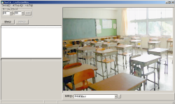
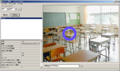
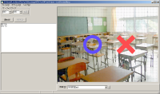
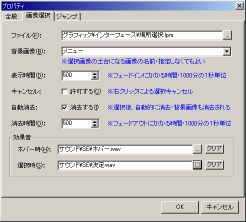
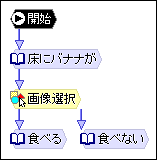
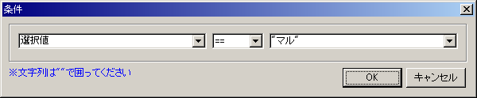
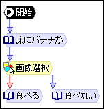
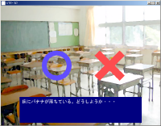

チュートリアル

次は、前回の選択肢を文字列ではなく画像で表示するように変えてみます。具体的には画面に○と×を表示し、プレイヤーにどちらか選択させます。
画像選択を行うためにはLivePreviewMenuで専用ファイルを作らなければなりません。では、LivePreviewMenuを起動してください。ちなみに○と×の画像ファイルは既に用意されているものとします。
右下に「背景」という項目がありますが、これはボタンをレイアウトしやすくするために表示する背景画像を指定します。作成するファイルには影響しないので、何を指定しても構いません。
では、左上にある「追加」ボタンを押してください。ファイルダイアログが出たら、○用の画像ファイルを選択します。右側に画像が表示され、左下に文字列が並びます。この左下のリストは、この画像のプロパティです。では、このプロパティのうち「名前」を見てください。「Button00」になっていると思いますが、これを「マル」に変更してください。次に、右側に表示されている○を表示させる位置までドラッグしてください。
○はこれで完了です。ではまた「追加」ボタンを押して、今度は×用の画像ファイルを選択してください。そして「名前」を「バツ」に変え、表示位置も○の横に来るようにドラッグします。
最終的にはこのようになります。

これを「マルバツ.lpm」というファイル名で保存してください。
LiveNovelの作業に移ります。

「画像選択」追加ボタンをクリックしてください。

「床にバナナが」ノードから「画像選択」ノードにジャンプするように矢印を引きます。
そして「画像選択」ノードをダブルクリックします。

「ファイル」は選択に使用するプレビューメニューファイルです。先ほど作成した「マルバツ.lpm」を指定してください。
「背景画像」には選択画像の土台になる画像を指定します。ここでは土台なしで表示するので、空のままにしておきます。
「表示時間」は選択画像が出現する時のフェードイン時間です。ここでは500ミリ秒のままにしておきます。
「自動消去」はプレイヤーが画像を選択した後に画像を消去するかどうかの指定です。ここでは消去するのでチェックを付けます。「消去時間」は画像を消去する際のフェードアウト時間です。ここではデフォルトの500ミリ秒のままにしておきます。
OKをクリックしてダイアログを閉じます。
次に、選択結果によって分岐させるために、条件付きのジャンプを作成します。

文字列選択ノードから、②と③のノードそれぞれに矢印を引いてください。
②に引いた矢印をダブルクリックします。

設定ダイアログが表示されます。
「条件」の「追加」ボタンをクリックします。
プレイヤーが選択した項目の名前が「選択値」という変数に入るので、それを使って条件を設定します。

「==」は左辺と右辺が同じという意味です。
OKをクリックしてダイアログを閉じます。

条件が設定されたジャンプは、赤い矢印になります。
ここでは２つの選択肢しかないので、「食べない」へのジャンプの条件は付けなくても構いませんが、付ける場合は「選択値 == "バツ"」になります。
ではF5を押して実行してみてください。

○×画像が表示されたらそれぞれ選択して、正しく進むか確認してください。